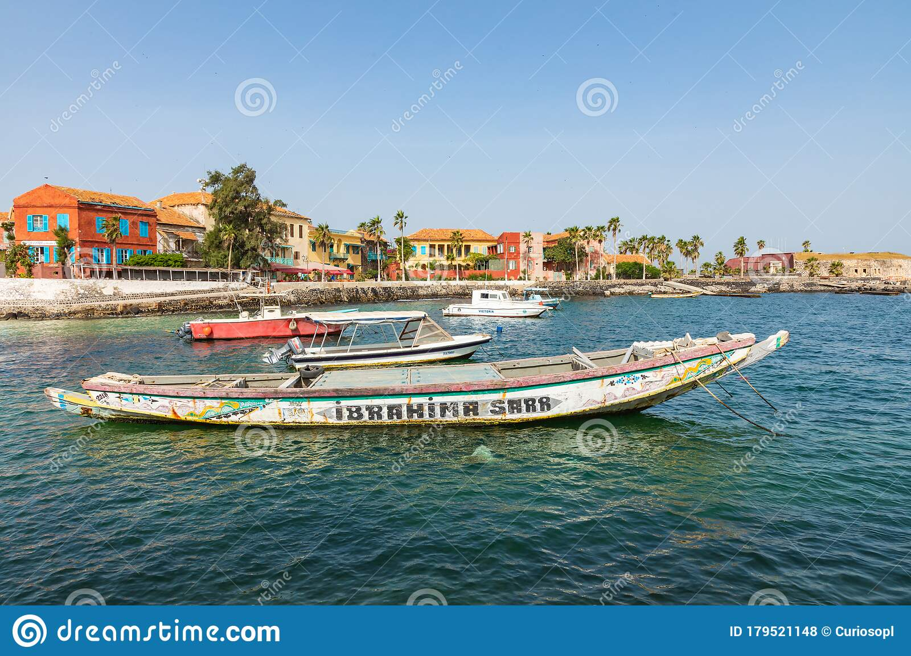
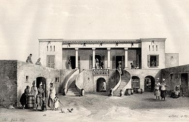

L'île de Gorée, ou simplement Gorée, est à la fois une île de l'océan Atlantique nord située dans la baie de Dakar et l'une des 19 communes d'arrondissement de la capitale du Sénégal. C'est un lieu symbole de la mémoire de la traite négrière en Afrique, reconnu officiellement par l’Organisation des Nations unies (ONU) en 1978 : Gorée, « île-mémoire » de cette tragédie, fut ainsi l’un des tout premiers lieux à être portés sur la liste du patrimoine mondial gérée par l'Organisation des Nations unies pour l'éducation, la science et la culture (UNESCO).

La Maison des Esclaves1 est un édifice historique situé sur l'île de Gorée, à Dakar au Sénégal. L'actuelle Maison des Esclaves daterait de l'année 1776. Elle est située dans la rue Saint-Germain, sur le côté est de l’île. Elle se trouve face au Musée de la Femme Henriette-Bathily. En dépit des études historiques qui ont montré que la Maison des Esclaves n'aurait pas joué le rôle attribué par certains dans les traites négrières, elle reste un lieu qui revêt pour beaucoup une grande portée symbolique en tant qu'emblème de la traite négrière.